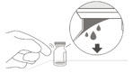

FULL PRESCRIBING INFORMATION
HIGHLIGHTS OF PRESCRIBING INFORMATIONThese highlights do not include all the information needed to use VABYSMO safely and effectively. See full prescribing information for VABYSMO.
VABYSMO™ (faricimab-svoa) injection, for intravitreal use Initial U.S. Approval: 2022 INDICATIONS AND USAGEDOSAGE AND ADMINISTRATIONFor intravitreal injection. (2.1)
DOSAGE FORMS AND STRENGTHSInjection: 120 mg/mL solution in a single-dose vial (3) CONTRAINDICATIONSWARNINGS AND PRECAUTIONS
ADVERSE REACTIONSThe most common adverse reaction (≥ 5%) reported in patients receiving VABYSMO was conjunctival hemorrhage (7%). (6.1) To report SUSPECTED ADVERSE REACTIONS, contact Genentech at 1-888-835-2555 or FDA at 1-800-FDA-1088 or www.fda.gov/medwatch. See 17 for PATIENT COUNSELING INFORMATION. Revised: 02/2022 |
1 INDICATIONS AND USAGE
VABYSMO is a vascular endothelial growth factor (VEGF) and angiopoietin 2 (Ang-2) inhibitor indicated for the treatment of patients with:
2 DOSAGE AND ADMINISTRATION
2.1 General Dosing Information
For intravitreal injection. VABYSMO must be administered by a qualified physician. Each vial should only be used for the treatment of a single eye.
2.2 Neovascular (wet) Age-Related Macular Degeneration (nAMD)
The recommended dose for VABYSMO is 6 mg (0.05 mL of 120 mg/mL solution) administered by intravitreal injection every 4 weeks (approximately every 28 ± 7 days, monthly) for the first 4 doses, followed by optical coherence tomography and visual acuity evaluations 8 and 12 weeks later to inform whether to give a 6 mg dose via intravitreal injection on one of the following three regimens: 1) Weeks 28 and 44; 2) Weeks 24, 36 and 48; or 3) Weeks 20, 28, 36 and 44. Although additional efficacy was not demonstrated in most patients when VABYSMO was dosed every 4 weeks compared to every 8 weeks, some patients may need every 4 week (monthly) dosing after the first 4 doses. Patients should be assessed regularly.
2.3 Diabetic Macular Edema (DME)
VABYSMO is recommended to be dosed by following one of these two dose regimens: 1) 6 mg (0.05 mL of 120 mg/mL solution) administered by intravitreal injection every 4 weeks (approximately every 28 days ± 7 days, monthly) for at least 4 doses. If after at least 4 doses, resolution of edema based on the central subfield thickness (CST) of the macula as measured by optical coherence tomography is achieved, then the interval of dosing may be modified by extensions of up to 4 week interval increments or reductions of up to 8 week interval increments based on CST and visual acuity evaluations through week 52; or 2) 6 mg dose of VABYSMO can be administered every 4 weeks for the first 6 doses, followed by 6 mg dose via intravitreal injection at intervals of every 8 weeks (2 months) over the next 28 weeks. Although additional efficacy was not demonstrated in most patients when VABYSMO was dosed every 4 weeks compared to every 8 weeks, some patients may need every 4 week (monthly) dosing after the first 4 doses. Patients should be assessed regularly.
2.4 Preparation for Administration
| |
| |
|
Figure A | |
| |
|
Figure B |
 Figure C |
|
Figure D |
Figure E |
| |
|
Figure F | |
|
Figure G |
Figure H |
| |
|
Figure I | |
| |
| |
| |
|
Figure J | |
| |
| |
|
Figure K | |
| |
|
Figure L | |
2.5 Injection Procedure
The intravitreal injection procedure must be carried out under aseptic conditions, which includes the use of surgical hand disinfection, sterile gloves, a sterile drape and a sterile eyelid speculum (or equivalent), and the availability of sterile paracentesis equipment (if required). Adequate anesthesia and a broad-spectrum microbicide should be administered prior to the injection. Inject slowly until the rubber stopper reaches the end of the syringe to deliver the volume of 0.05 mL. Confirm delivery of the full dose by checking that the rubber stopper has reached the end of the syringe barrel.
Any unused medicinal product or waste material should be disposed of in accordance with local regulations.
Immediately following the intravitreal injection, patients should be monitored for elevation in intraocular pressure. Appropriate monitoring may consist of a check for perfusion of the optic nerve head or tonometry. If required, a sterile paracentesis needle should be available. Following intravitreal injection, patients should be instructed to report any symptoms suggestive of endophthalmitis or retinal detachment (e.g., vision loss, eye pain, redness of the eye, photophobia, blurring of vision) without delay [see Patient Counseling Information (17)]. Each syringe should only be used for the treatment of a single eye. If the contralateral eye requires treatment, a new syringe should be used and the sterile field, syringe, gloves, drapes, eyelid speculum, filter, and injection needles should be changed before VABYSMO is administered to the other eye.
3 DOSAGE FORMS AND STRENGTHS
Injection: 120 mg/mL clear to opalescent, colorless to brownish-yellow solution in a single-dose vial.
4 CONTRAINDICATIONS
4.1 Ocular or Periocular Infections
VABYSMO is contraindicated in patients with ocular or periocular infections.
5 WARNINGS AND PRECAUTIONS
5.1 Endophthalmitis and Retinal Detachments
Intravitreal injections have been associated with endophthalmitis and retinal detachments [see Adverse Reactions (6.1)]. Proper aseptic injection techniques must always be used when administering VABYSMO. Patients should be instructed to report any symptoms suggestive of endophthalmitis or retinal detachment without delay, to permit prompt and appropriate management [see Dosage and Administration (2.6) and Patient Counseling Information (17)].
5.2 Increase in Intraocular Pressure
Transient increases in intraocular pressure (IOP) have been seen within 60 minutes of intravitreal injection, including with VABYSMO [see Adverse Reactions (6.1)]. IOP and the perfusion of the optic nerve head should be monitored and managed appropriately [see Dosage and Administration (2.6)].
5.3 Thromboembolic Events
Although there was a low rate of arterial thromboembolic events (ATEs) observed in the VABYSMO clinical trials, there is a potential risk of ATEs following intravitreal use of VEGF inhibitors. ATEs are defined as nonfatal stroke, nonfatal myocardial infarction, or vascular death (including deaths of unknown cause).
The incidence of reported ATEs in the nAMD studies during the first year was 1% (7 out of 664) in patients treated with VABYSMO compared with 1% (6 out of 662) in patients treated with aflibercept [see Clinical Studies (14.1)].
The incidence of reported ATEs in the DME studies during the first year was 2% (25 out of 1,262) in patients treated with VABYSMO compared with 2% (14 out of 625) in patients treated with aflibercept [see Clinical Studies (14.2)].
6 ADVERSE REACTIONS
The following potentially serious adverse reactions are described elsewhere in the labeling:
- Hypersensitivity [see Contraindications (4)]
- Endophthalmitis and retinal detachments [see Warnings and Precautions (5.1)]
- Increase in intraocular pressure [see Warnings and Precautions (5.2)]
- Thromboembolic events [see Warnings and Precautions (5.3)]
6.1 Clinical Trials Experience
Because clinical trials are conducted under widely varying conditions, adverse reaction rates observed in the clinical trials of a drug cannot be directly compared to rates in other clinical trials of the same or another drug and may not reflect the rates observed in practice.
The data described below reflect exposure to VABYSMO in 1,926 patients, which constituted the safety population in four Phase 3 studies [see Clinical Studies (14.1, 14.2)].
| Adverse Reactions | VABYSMO | Active Control (aflibercept) |
||
|---|---|---|---|---|
| AMD N=664 |
DME N=1262 |
AMD N=622 |
DME N=625 |
|
| Conjunctival hemorrhage | 7% | 7% | 8% | 6% |
| Vitreous floaters | 3% | 3% | 2% | 2% |
| Retinal pigment epithelial tear* | 3% | 1% | ||
| Intraocular pressure increased | 3% | 3% | 2% | 2% |
| Eye pain | 3% | 2% | 3% | 3% |
| Intraocular inflammation† | 2% | 1% | 1% | 1% |
| Eye irritation | 1% | 1% | < 1% | 1% |
| Ocular discomfort | 1% | 1% | < 1% | < 1% |
| Vitreous hemorrhage | < 1% | 1% | 1% | < 1% |
Less common adverse reactions reported in < 1% of the patients treated with VABYSMO were corneal abrasion, eye pruritus, lacrimation increased, ocular hyperemia, blurred vision, eye irritation, sensation of foreign body, endophthalmitis, visual acuity reduced transiently, retinal tear and rhegmatogenous retinal detachment.
6.2 Immunogenicity
The immunogenicity of VABYSMO was evaluated in plasma samples. The immunogenicity data reflect the percentage of patients whose test results were considered positive for antibodies to VABYSMO in immunoassays. The detection of an immune response is highly dependent on the sensitivity and specificity of the assays used, sample handling, timing of sample collection, concomitant medications, and underlying disease. For these reasons, comparison of the incidence of antibodies to VABYSMO with the incidence of antibodies to other products may be misleading.
There is a potential for an immune response in patients treated with VABYSMO. In the nAMD and DME studies, the pre-treatment incidence of anti-faricimab antibodies was approximately 1.8% and 0.8%, respectively. After initiation of dosing, anti-faricimab antibodies were detected in approximately 10.4% and 8.4% of patients with nAMD and DME respectively, treated with VABYSMO across studies and across treatment groups. As with all therapeutic proteins, there is a potential for immunogenicity with VABYSMO.
8 USE IN SPECIFIC POPULATIONS
8.1 Pregnancy
Risk Summary
There are no adequate and well-controlled studies of VABYSMO administration in pregnant women.
Administration of VABYSMO to pregnant monkeys throughout the period of organogenesis resulted in an increased incidence of abortions at intravenous (IV) doses 158 times the human exposure (based on Cmax) of the maximum recommended human dose [see Animal Data]. Based on the mechanism of action of VEGF and Ang-2 inhibitors, there is a potential risk to female reproductive capacity, and to embryo-fetal development. VABYSMO should not be used during pregnancy unless the potential benefit to the patient outweighs the potential risk to the fetus.
All pregnancies have a background risk of birth defect, loss, and other adverse outcomes. The background risk of major birth defects and miscarriage for the indicated population is unknown. In the U.S. general population, the estimated background risk of major birth defects is 2%-4% and of miscarriage is 15%-20% of clinically recognized pregnancies.
Data
Animal Data
An embryo fetal developmental toxicity study was performed on pregnant cynomolgus monkeys. Pregnant animals received 5 weekly IV injections of VABYSMO starting on day 20 of gestation at 1 or 3 mg/kg. A non-dose dependent increase in pregnancy loss (abortions) was observed at both doses evaluated. Serum exposure (Cmax) in pregnant monkeys at the low dose of 1 mg/kg was 158 times the human exposure at the maximum recommended intravitreal dose of 6 mg once every 4 weeks. A no observed adverse effect level (NOAEL) was not identified in this study.
8.2 Lactation
Risk Summary
There is no information regarding the presence of faricimab in human milk, the effects of the drug on the breastfed infant, or the effects of the drug on milk production. Many drugs are transferred in human milk with the potential for absorption and adverse reactions in the breastfed child.
The developmental and health benefits of breastfeeding should be considered along with the mother's clinical need for VABYSMO and any potential adverse effects on the breastfed child from VABYSMO.
8.3 Females and Males of Reproductive Potential
8.4 Pediatric Use
The safety and efficacy of VABYSMO in pediatric patients have not been established.
8.5 Geriatric Use
In the four clinical studies, approximately 60% (1,149/1,929) of patients randomized to treatment with VABYSMO were ≥ 65 years of age. No significant differences in efficacy or safety of faricimab were seen with increasing age in these studies. No dose adjustment is required in patients 65 years and above.
11 DESCRIPTION
Faricimab-svoa is a humanized bispecific immunoglobulin G1 (IgG1) antibody that binds both vascular endothelial growth factor A (VEGF-A) and angiopoietin-2 (Ang-2). The fragment crystallizable (Fc) region of faricimab was engineered by selected point mutations to abolish binding interactions with Fcγ and FcRn receptors. Faricimab-svoa has a total molecular weight of approximately 149 kDa and is produced by recombinant DNA technology using mammalian Chinese Hamster Ovary (CHO) cell culture.
VABYSMO (faricimab-svoa) injection is a sterile, clear to opalescent, colorless to brownish-yellow solution in a single-dose glass vial for intravitreal administration. Each single-dose vial is designed to deliver 0.05 mL (50 microliters) of solution containing 6 mg faricimab-svoa, L-histidine (155 mcg), L-methionine (52.2 mcg), polysorbate 20 (20 mcg), sodium chloride (73.1 mcg), D-sucrose (2.74 mg) and Water for Injection, adjusted to pH 5.5 with acetic acid. The product does not contain an anti-microbial preservative.
12 CLINICAL PHARMACOLOGY
12.1 Mechanism of Action
Faricimab is a humanized bispecific antibody that acts through inhibition of two pathways by binding to VEGF-A and Ang-2. By inhibiting VEGF-A, faricimab suppresses endothelial cell proliferation, neovascularization and vascular permeability. By inhibiting Ang-2, faricimab is thought to promote vascular stability and desensitize blood vessels to the effects of VEGF-A. Ang-2 levels are increased in some patients with nAMD and DME. The contribution of Ang-2 inhibition to the treatment effect and clinical response for nAMD and DME has yet to be established.
12.2 Pharmacodynamics
Increased retinal thickness, assessed by optical coherence tomography (OCT), is associated with nAMD and DME. Leakage of blood and fluid from choroidal neovascularization, assessed by fluorescein angiography, is associated with nAMD. Reductions in central subfield thickness (CST) were observed from baseline through the first year of treatment across all treatment arms in the four Phase 3 studies in nAMD and DME.
12.3 Pharmacokinetics
Absorption/Distribution
Maximum faricimab plasma concentrations (Cmax) are estimated to occur approximately 2 days post-dose. Mean (±SD) free faricimab (unbound to VEGF-A and Ang-2) plasma Cmax are estimated to be 0.23 (0.07) mcg/mL and 0.22 (0.07) mcg/mL in nAMD and in DME patients, respectively. After repeated intravitreal administrations, mean plasma free faricimab trough concentrations are predicted to be 0.002-0.003 mcg/mL for Q8W dosing. Although not directly measured in the vitreous, no accumulation of faricimab is expected in the vitreous and no accumulation has been observed in plasma when faricimab has been administered as repeat doses in the vitreous.
Metabolism/Elimination
Metabolism and elimination of faricimab has not been fully characterized. Faricimab is expected to be catabolized in lysosomes to small peptides and amino acids, which may be excreted renally, in a similar manner to the elimination of endogenous IgG. The estimated mean apparent systemic half-life of faricimab is 7.5 days.
Specific Populations
The systemic pharmacokinetics of faricimab were not influenced by gender, race, or mild to severe renal impairment (i.e., estimated normalized creatinine clearance by Cockroft-Gault equation: 15 to 89 mL/min/1.73 m2). The effect of severe renal impairment or any degree of hepatic impairment on the pharmacokinetics of VABYSMO is unknown. No special dosage modification is required for any of the populations that have been studied (e.g., elderly, gender, race).
13 NONCLINICAL TOXICOLOGY
13.1 Carcinogenesis, Mutagenesis, Impairment of Fertility
No carcinogenicity or mutagenicity data are available for VABYSMO injection in animals or humans.
Based on the anti-VEGF and Ang-2 mechanisms of action, treatment with VABYSMO may pose a risk to reproductive capacity [see Females and Males of Reproductive Potential (8.3)].
14 CLINICAL STUDIES
14.1 Neovascular (wet) Age-Related Macular Degeneration (nAMD)
The safety and efficacy of VABYSMO were assessed in two randomized, multi-center, double-masked, active comparator-controlled, 2-year studies (TENAYA – NCT03823287 and LUCERNE – NCT03823300) in patients with nAMD.
A total of 1,329 newly diagnosed, treatment-naive patients were enrolled in these studies, and 664 patients received at least one dose of VABYSMO. Patient ages ranged from 50 to 99 with a mean of 75.9 years. The studies were identically designed two year studies. Patients were randomized in a 1:1 ratio to one of two treatment arms: 1) aflibercept 2 mg administered fixed every 8 weeks (Q8W) after three initial monthly doses; and VABYSMO 6 mg (0.05 mL of 120 mg/mL solution) administered by intravitreal injection every 4 weeks (approximately every 28 ± 7 days, monthly) for the first 4 doses, followed by optical coherence tomography and visual acuity evaluations 8 and 12 weeks later to determine whether to give a 6 mg (0.05 mL of 120 mg/mL solution) dose via intravitreal injection on one of the following three regimens: 1) Weeks 28 and 44; (also referred to as Q16W dosing); 2) Weeks 24, 36 and 48 (also referred to as Q12W dosing); or 3) Weeks 20, 28, 36 and 44 (also referred to as Q8W dosing). However, the utility of these criteria to guide dosing intervals has not been established.
At week 48, after 4 initial monthly doses in the VABYSMO arm, 45% of patients received the Weeks 28 and 44 dosing, 33% of patients received the Weeks 24, 36 and 48 dosing, and the remaining 22% of patients received dosing every 8 weeks. These percentages are reflective of what happened within the conduct of these trials and indicate that some patients did well on two (2) doses spaced 16 weeks apart, or three (3) doses spaced 12 weeks apart, but the percentages may not be generalizable to a broader nAMD population for a variety of reasons. The inclusion/exclusion criteria limited enrollment to a select subset of treatment naive, newly diagnosed nAMD patients and there is no empirical data that a similar magnitude would be observed if eligibility criteria allowed for broader enrollment. The disease activity criteria, which was instrumental in determining dose frequency, is unvalidated. Stricter criteria would have changed how patients were treated resulting in different percentages of subjects in each dose interval cohort. There was not a similarly dosed aflibercept arm for comparison, which makes the percentages difficult to interpret.
Both studies demonstrated non-inferiority to the comparator control (aflibercept) at the primary endpoint, defined as the mean change from baseline in Best Corrected Visual Acuity (BCVA) when averaged over the week 40, 44, and 48 visits and measured by the Early Treatment Diabetic Retinopathy Study (ETDRS) letter chart. The primary endpoint analysis was a non- inferiority comparison for the mean change in BCVA between the aflibercept and the VABYSMO arm. The lower bound of the 95% confidence interval for the mean change in BCVA could not be lower than minus 4 letters to declare non-inferiority. In both studies, VABYSMO treated patients had a non-inferior mean change from baseline in BCVA compared to patients treated with aflibercept. Detailed results of both studies are shown in Table 2, Figure 1, and Figure 2 below. The clinical efficacy for the second year of the study has not been reviewed.
| TENAYA | LUCERNE | |||
|---|---|---|---|---|
| VABYSMO N = 334 |
Aflibercept N = 337 |
VABYSMO N = 331 |
Aflibercept N = 327 |
|
| BCVA: Best Corrected Visual Acuity | ||||
| ETDRS: Early Treatment Diabetic Retinopathy Study | ||||
| CI: Confidence Interval | ||||
| LS: Least Square | ||||
| ||||
| Mean change in BCVA as measured by ETDRS letter score from baseline (95% CI) |
5.8 (4.6, 7.1) |
5.1 (3.9, 6.4) |
6.6 (5.3, 7.8) |
6.6 (5.3, 7.8) |
| Difference in LS mean (95% CI) |
0.7 (-1.1, 2.5) |
0.0 (-1.7, 1.8) |
||
Figure 1: Mean Change in Visual Acuity from Baseline to Week 48 in TENAYA
Figure 2: Mean Change in Visual Acuity from Baseline to Week 48 in LUCERNE
Treatment effects in evaluable subgroups (e.g., age, gender, race, baseline visual acuity) in each study were consistent with the results in the overall population.
14.2 Diabetic Macular Edema (DME)
The safety and efficacy of VABYSMO were assessed in two randomized, multi-center, double-masked, active comparator-controlled 2-year studies (YOSEMITE – NCT03622580 and RHINE – NCT03622593) in patients with DME.
A total of 1,891 diabetic patients were enrolled in the two studies with a total of 1,262 patients treated with at least one dose of VABYSMO. Patient ages ranged from 24 to 91 with a mean of 62.2 years. The overall population included both anti-VEGF naive patients (78%) and patients who had been previously treated with a VEGF inhibitor prior to study participation (22%).
The studies were identically designed 2 year studies. Patients were randomized in a 1:1:1 ratio to one of three treatment regimens: 1) aflibercept Q8W, patients received fixed aflibercept 2 mg administered every 8 weeks (Q8W) after the first five monthly doses; 2) VABYSMO Q8W, patients received fixed VABYSMO 6 mg administered Q8W after the first six monthly doses; and 3) VABYSMO Variable, patients received VABYSMO 6 mg administered every 4 weeks for at least 4 doses and until the central subfield thickness (CST) of the macula measured by optical coherence tomography was less than approximately 325 microns, then the interval of dosing was modified by up to 4 week interval extensions or reductions in up to 8 week interval increments based on CST and visual acuity disease activity criteria at study drug dosing visits. However, the utility of these disease activity criteria to guide dosing intervals has not been established.
After 4 initial monthly doses, the patients in the VABYSMO Variable arm could have received between the minimum of three and the maximum of eleven total injections through Week 56 inclusive. At Week 56, 32% of patients had completed at least one Q12W interval followed by one full Q16W interval. Seventeen percent (17%) of patients were treated on Q8W and/or Q4W dosing intervals through Week 56 (7% only on Q4W). Sustainability of the Q16W dosing interval cannot be determined based on year one data alone. These percentages are reflective of what happened within the conduct of these trials, but the percentages are not generalizable to a broader DME population for a variety of reasons. The inclusion/exclusion criteria limited enrollment to a select subset of DME patients and there is no empirical data that a similar magnitude would be observed if eligibility criteria allowed for broader enrollment. The disease activity criteria, which was instrumental in determining dose frequency, is unvalidated. Stricter criteria would have changed how patients were treated resulting in different percentages of subjects in each dose interval cohort. There was not a similarly dosed aflibercept arm for comparison which makes the percentages difficult to interpret.
Both studies demonstrated non-inferiority to the comparator control (aflibercept) at the primary endpoint, defined as the primary endpoint, defined as the mean change from baseline in BCVA at year 1 (average of the week 48, 52, and 56 visits), measured by the ETDRS Letter Score. The primary endpoint analysis was a non-inferiority comparison for the mean change in BCVA between the aflibercept and VABYSMO groups. The lower bound of the 97.5% confidence interval for the mean change in BCVA could not be lower than minus 4 letters to declare non-inferiority. In both studies, VABYSMO Q8W and VABYSMO Variable treated patients had a mean change from baseline in BCVA that was non-inferior to the patients treated with aflibercept Q8W. Detailed results of both studies are shown in Table 3, Figure 3, and Figure 4 below. The clinical efficacy for the second year of the study has not been reviewed.
| YOSEMITE | RHINE | |||||
|---|---|---|---|---|---|---|
| VABYSMO Q8W N = 315 |
VABYSMO Variable N = 313 |
Aflibercept Q8W N = 312 |
VABYSMO Q8W N = 317 |
VABYSMO Variable N = 319 |
Aflibercept Q8W N = 315 |
|
| BCVA: Best Corrected Visual Acuity | ||||||
| ETDRS: Early Treatment Diabetic Retinopathy Study | ||||||
| CI: Confidence Interval | ||||||
| LS: Least Square | ||||||
| ||||||
| Mean change in BCVA as measured by ETDRS letter score from baseline (97.5% CI) |
10.7 (9.4, 12.0) |
11.6 (10.3, 12.9) |
10.9 (9.6, 12.2) |
11.8 (10.6, 13.0) |
10.8 (9.6, 11.9) |
10.3 (9.1, 11.4) |
| Difference in LS mean (97.5% CI) |
-0.2 (-2.0, 1.6) |
0.7 (-1.1, 2.5) |
1.5 (-0.1, 3.2) |
0.5 (-1.1, 2.1) |
||
Figure 3: Mean Change in Visual Acuity from Baseline to Year 1 (Week 56) in YOSEMITE
Figure 4: Mean Change in Visual Acuity from Baseline to Year 1 (Week 56) in RHINE
Treatment effects in the subgroup of patients who were anti-VEGF naive prior to study participation were similar to those observed in the overall population. Treatment effects in evaluable subgroups (e.g., by age, gender, race, baseline HbA1c, baseline visual acuity) in each study were generally consistent with the results in the overall population.
16 HOW SUPPLIED/STORAGE AND HANDLING
16.1 How Supplied
VABYSMO (faricimab-svoa) injection is supplied as a clear to opalescent, colorless to brownish-yellow 120 mg/mL solution in a single-dose glass vial. Each glass vial contains an overfill amount to allow for administration of a single 0.05 mL dose of solution containing 6 mg of VABYSMO. Each VABYSMO carton (NDC 50242-096-01) contains one glass vial and one sterile 5-micron blunt transfer filter needle (18-gauge × 1½ inch, 1.2 mm × 40 mm).
16.2 Storage and Handling
Store VABYSMO in the refrigerator between 2°C to 8°C (36°F to 46°F). Do not freeze. Do not shake. Keep the vial in the original carton to protect from light.
Prior to use, the unopened glass vial of VABYSMO may be kept at room temperature, 20°C to 25°C (68°F to 77°F), for up to 24 hours. Ensure that the injection is given immediately after preparation of the dose.
17 PATIENT COUNSELING INFORMATION
Advise patients that in the days following VABYSMO administration, patients are at risk of developing endophthalmitis. If the eye becomes red, sensitive to light, painful, or develops a change in vision, advise the patient to seek immediate care from an ophthalmologist [see Warnings and Precautions (5)].
Patients may experience temporary visual disturbances after an intravitreal injection with VABYSMO and the associated eye examinations [see Adverse Reactions (6)]. Advise patients not to drive or use machinery until visual function has recovered sufficiently.
VABYSMO™ [faricimab-svoa]
Manufactured by:
Genentech, Inc.
A Member of the Roche Group
1 DNA Way
South San Francisco, CA 94080-4990
U.S. License No.: 1048
VABYSMO is a trademark of Genentech, Inc.
©2022 Genentech, Inc.
Representative sample of labeling (see the HOW SUPPLIED section for complete listing):